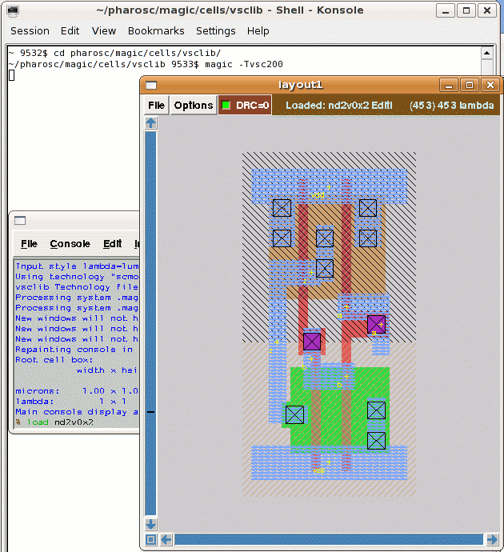

| vlsitechnology.org /Linux help/Magic layout | |
Magic layout | |
Linux help
Windows help
Linux Live CD
Magic is a layout editor which has been around for a long time and is still being maintained and improved. The pharosc layout has been converted to Magic with a script which writes CIF files from Alliance, hacks them and then reads them into Magic. For the vsclib, look at
pharosc/alliance/cells/vsclib/makeallviews |
Magic is used to extract the layout to a Spice deck and write CIF and GDS files.
The Magic extraction is more accurate than Alliance. The CIF and GDS layout files are also more accurate. Indeed it is hard or even impossible to write correct layout files from Alliance. The problem is in the generation of the implant layers which in deep sub-micron layout have to cover poly. In Alliance the implant layers are generated from the diffusion which can lead to poly interconnect being uncovered.
To be honest, my Magic editing environment is poor.
I don't know how to fix any of this and I am only using Magic in batch mode. If you have some fixes, please email me at graham.petley at vlsitechnology dot org.
